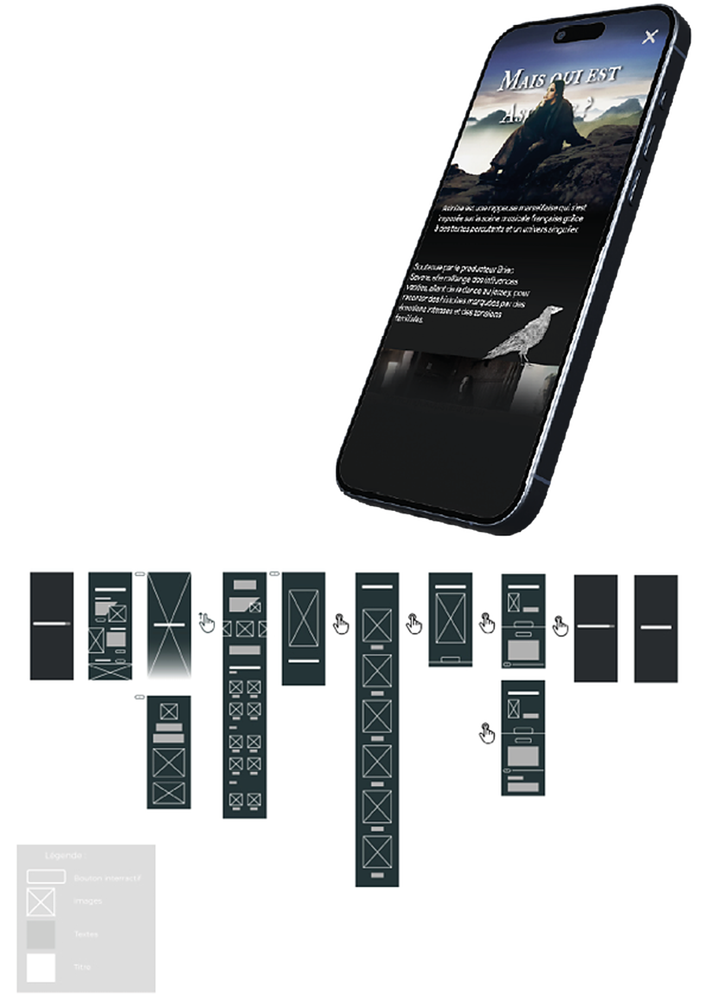
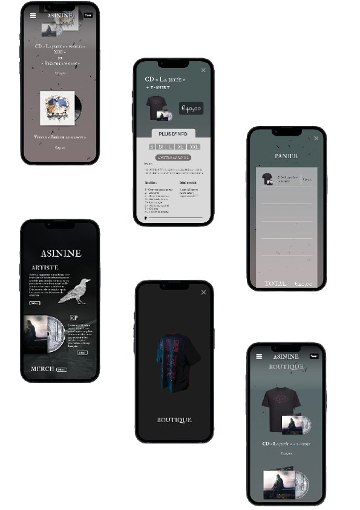

Projet de groupe autour de la création d'une application fictive pour l'artiste Asinine.
Je me suis occupée de la partie boutique de l'application en prenant en charge la conception des wireframes, les choix typographiques, les couleurs, la mise en page et l'organisation de l'interface.
Nous avons débuté le projet par la création de documents partagés pour rechercher des références et nous documenter sur l'artiste et son univers graphique.
Figma, Adobe Photoshop et Blender